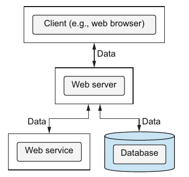

Chapter 7 · pp. 141–162
Basic data validation
Data-Oriented Programming, 1st Edition
The part 2 opener sets the stakes. Theo has decided against DOP for the big Klafim project, which has several developers, a large code base and an "optimistic" deadline his boss Monica accepted. His reasons (pp. 137–138):
- With generic data, nobody knows what kind of data is in hand.
- The concurrency control isn't thread-safe.
- Structural sharing reportedly slows down as data grows.
- Data will live in a database and external services, not in memory.
Joe answers with the story of the woodcutter too busy to sharpen his saw, and a bet. If Theo misses the deadline and is fired, Joe hires him at double his salary; if he meets it, Theo buys gifts for Joe's children (pp. 138–139). Part 2 then takes the objections one at a time.
This chapter answers the first. DOP's fourth principle is to separate data schema from data representation (p. 141). Data stays in generic maps, and a separate JSON Schema describes what valid data looks like. The most important place to validate is the boundaries of the system: client requests and responses, the database, and web services. Once boundary data is valid, unexpected data inside is unlikely (pp. 142–143). Joe and Theo write schemas for a search request, a search response, a database response and the Open Library Books API, using type, properties, items, enum, required, additionalProperties, and the composition keywords allOf and anyOf (pp. 143–157). They read failure details from the Ajv validator (pp. 158–160). Joe's parting gift is a JSON Schema cheat sheet (pp. 160–161).
The chapter’s own outline (from the book’s table of contents)
- 7.1 Data validation in DOP — p. 142
- 7.2 JSON Schema in a nutshell — p. 143
- 7.3 Schema flexibility and strictness — p. 149
- 7.4 Schema composition — p. 154
- 7.5 Details about data validation failures — p. 158
- Summary — p. 161
From the book
Introduction
| Theo's objection at scale (pp. 138) | Where part 2 answers it |
|---|---|
| Hard to know what kind of data you have | This chapter (validation); type-like help returns in chapter 12 |
| Concurrency control isn't thread-safe | 8. Advanced concurrency control |
| Structural sharing slows down as data grows | 9. Persistent data structures |
| Data will live in databases and services | 10. Database operations, 11. Web services |
The chapter focuses on validation at the system's boundaries; validation as data flows through the system comes in part 3 (p. 141).
From the book
7.1 Data validation in DOP
What Theo would miss most from OOP is the guarantee that an instantiated class has fields with the proper names and types; with maps it's easy to make small mistakes (p. 142). Joe: in DOP the schema is separate from the representation, and the most important data to validate is data crossing the system's boundaries. For a web server those are its communication with clients, databases and web services (figure 7.1, pp. 142–143).


| Kind of validation | Purpose | Environment (table 7.1, p. 143) |
|---|---|---|
| Boundaries | Guardian | Production |
| Inside | Ease of development | Dev |
At the boundaries the purpose is to keep invalid data from going in or out, and to display informative errors when it is encountered (p. 143).
From the book
7.2 JSON Schema in a nutshell
A search request has a title string and a fields array of strings (listing 7.1, p. 144). Its schema is built step by step (pp. 144–147); the book uses JSON Schema version 2020-12:
| Step | Keyword | Listing |
|---|---|---|
| A map | "type": "object" with properties holding each field's schema | 7.2–7.3 |
| Array elements | "items": {"type": "string"} | 7.4 |
| A closed list of fields | "items": {"enum": ["publishers", "number_of_pages", "weight", …]} | 7.5 |
| Mandatory fields | "required": ["title", "fields"] | 7.6 |
Validating means checking whether data conforms to a schema. Libraries expose a validate(schema, data) that returns true or false (p. 147):
| Language | Library (table 7.2, p. 147) |
|---|---|
| JavaScript | Ajv |
| Java | Snow |
| C# | JSON.net Schema |
| Python | jschon |
| Ruby | JSONSchemer |
The request {"title": "habit", "fields": [...]} validates; a typo tilte fails, because title is required (listings 7.8–7.9, pp. 148–149). Why is JSON Schema more verbose than class members? It is language-independent, and it can express conditions that are hard or impossible with classes, such as number ranges or regular expressions. Those come in chapter 12 (p. 149).
Try it
JSON Schema playground
Open full screen ↗ · the simulation is the vault’s own model of the mechanism the book describes.
From the book
7.3 Schema flexibility and strictness
A search response is an array of book results. title and available are required, and subtitle, number_of_pages, subjects, isbn and isbn_13 are optional (listings 7.10–7.11, pp. 149–150). Joe is reading The Power of Habit to stop biting his nails (p. 150). Because the schema is just JSON, the nested book schema can live in a variable, bookInfoSchema, and be reused as "items": bookInfoSchema. JSON Schemas are more composable than class definitions (listing 7.12, p. 151).
A database response has exactly three fields, title, isbn and available, all required (listing 7.13, p. 152). An array whose books carry an extra dummy_property still validates, because unspecified fields are allowed by default. Usually that's harmless, since code ignores fields it doesn't care about. additionalProperties: false makes the schema strict (listings 7.14–7.15, pp. 152–153).
Should request and response schemas be strict? Joe calls it a matter of taste. He prefers to allow extra fields in requests and disallow them in responses: the server is responsible for what it sends, but should serve its clients even when they aren't strict. He cites Jon Postel's robustness principle, "Be conservative in what you send, be liberal in what you accept" (p. 153).
From the book
7.4 Schema composition
The Open Library Books API returns rich book data (listing 7.16, p. 154). Theo's schema requires only title (listing 7.17, pp. 154–155). Joe stares at the ISBNs, because one of them must always be there (p. 155):
- Books published before 2007 have
isbn_10, and books published after haveisbn_13. - Watchmen has both: it was first published in 1986 but republished after 2007.
Theo writes the rule as basicBookInfoSchema AND (mandatoryIsbn13 OR mandatoryIsbn10). In JSON Schema that is allOf and anyOf; oneOf also exists, for "exactly one" (listing 7.18, pp. 155–157):
var bookInfoSchema = {
"allOf": [
basicBookInfoSchema,
{"anyOf": [mandatoryIsbn13, mandatoryIsbn10]}
]
};The Watchmen response validates (listing 7.19, p. 157).
Try it
ISBN composition
Open full screen ↗ · the simulation is the vault’s own model of the mechanism the book describes.
From the book
7.5 Details about data validation failures
Validation isn't binary: a failure says what went wrong. Each library exposes details its own way; Ajv stores the last validation's errors as an array on the validator instance (p. 158).
| Request | Ajv result |
|---|---|
myTitle instead of title (listings 7.20–7.21) | One error: instancePath "", schemaPath "#/required", keyword "required", params.missingProperty "title" |
The same, through ajv.errorsText (listing 7.22) | data must have required property 'title' |
myTitle, and fields: [1, 2], with new Ajv({allErrors: true}) (listing 7.23) | Three errors: the missing title, data/fields/0 must be string, data/fields/1 must be string |
By default, Ajv catches only the first validation failure; Theo guesses that's for performance (p. 159). The summary adds that the details are sent back to the client in human-readable form (p. 161).
Joe's gift, wrapped in a light-green ribbon, is a JSON Schema cheat sheet. It shows an array of maps with a number, a string, an enum and a Boolean field, two of them required and additionalProperties: false. On the back is an example of valid data (listings 7.24–7.25, pp. 160–161).
Run it: the mini validator experiment implements the chapter's subset of JSON Schema in Python and runs listings 7.8–7.23 through it.
Recap
Trade-offs at a glance
| Choice | Benefit | Cost |
|---|---|---|
| Classes as schema (OOP) | Names and types checked when instantiated; IDE support | Rigid; nullable members; limited expressiveness (pp. 142, 149–150) |
| JSON Schema, separate from data | Language-independent, composable, expressive | Verbose (p. 149) |
| Validate at boundaries only | Catches bad data where it enters or leaves; cheap | Inside the system, nothing checks shapes (until part 3) |
additionalProperties allowed | Lenient with clients; tolerant of extra fields | Typos in optional fields slip through |
additionalProperties: false | Strict responses and database reads | Every new field needs a schema change |
| Ajv defaults | Stops at the first failure | Needs allErrors: true for full feedback (p. 159) |
Recap
Key takeaways
- Principle #4: separate data schema from data representation. DOP doesn't force validation but doesn't prevent it. You validate data against a schema "as you will and when you will" (pp. 141–144).
- Boundaries are where the system exchanges data. For a web server those are the client, the database and web services (pp. 142–143).
- Two kinds of validation (table 7.1, p. 143): at the boundaries, as a guardian in production; inside the system, for ease of development in dev (covered in part 3).
- JSON Schema is verbose but language-independent and highly expressive (p. 149).
- Map fields are optional by default; list mandatory ones in
required. That is simpler than marking class members nullable (p. 150). - Fields not in the schema are allowed by default;
additionalProperties: falseforbids them (p. 153). - Be strict with what you send, flexible with what you receive. Joe allows extra fields in requests and disallows them in responses, following Postel's robustness principle (p. 153).
- Schemas are just maps, so you can store them in variables and compose them with
allOf,anyOfandoneOf(pp. 151, 155–157). - Validation failures carry details. Ajv stores them in
errors, reports only the first by default, and reports all withallErrors: true(pp. 158–160).
Practice
Check yourself
1State DOP Principle #4. Does DOP force you to validate data?Show answer
2What are a system's boundaries, and why does validating there matter most?Show answer
3In JSON Schema, are map fields optional or required by default? Are extra fields allowed?Show answer
4Where does Joe set additionalProperties: false, and why?Show answer
5Write the rule for the Books API response that requires at least one ISBN field.Show answer
6Why does a request with myTitle and fields: [1, 2] show one error by default and three with allErrors?Show answer
7Give two reasons JSON Schema is more verbose than class member declarations.Show answer
Supplement
Beyond the book
Vault supplement — not from the book.
- A typo in an optional field passes silently. Validation catches the
tiltetypo only becausetitleis required (listing 7.9). Misspell an optional field such assubtitlein a lenient schema and the request is valid, just without the subtitle. That is the hidden cost of Joe's preference for liberal requests;additionalProperties: false, or JSON Schema'sunevaluatedPropertiesin 2020-12, closes the gap. - Postel's principle has critics. RFC 9413 (2023, "Maintaining Robust Protocols") argues that being liberal in what you accept lets broken senders persist and makes protocols harder to evolve. Being liberal is a choice to revisit as an API matures.
- Schemas as data, beyond validation. Because a JSON Schema is a map, tools generate forms, documentation (OpenAPI uses JSON Schema for request and response bodies), test data and even TypeScript types from it. Chapter 12 uses that for function arguments and for generating data.
- Runtime validators in other ecosystems. Clojure's spec and Malli, Python's pydantic and TypeScript's zod play the same role. Malli and zod, like JSON Schema, describe data with data or plain values rather than classes.
Next steps
Keep going
Run it
The chapter's JSON Schema keywords in about a hundred lines of Python: type, properties, required, items, enum, additionalProperties, allOf, anyOf and oneOf. Errors come in Ajv's style, with an all-errors switch. The script runs the chapter's requests, database responses and Open Library responses through it.
cd books/data-oriented-programming/lab/07-mini-json-schema
python3 mini_json_schema.pyConnections
- The objection answered: "it's hard to know what data you have" from 6. Unit tests (part 1's ending) and the part 2 opener.
- Validation in the commit phase: the
SystemValidity.validateplaceholder from 4. State management. - Boundaries in practice: database results in 10. Database operations and web service data in 11. Web services.
- Validating inside the system: 12. Advanced data validation.
- Run it: A mini JSON Schema validator — the chapter's keywords in about a hundred lines of Python, with Ajv-style error paths.